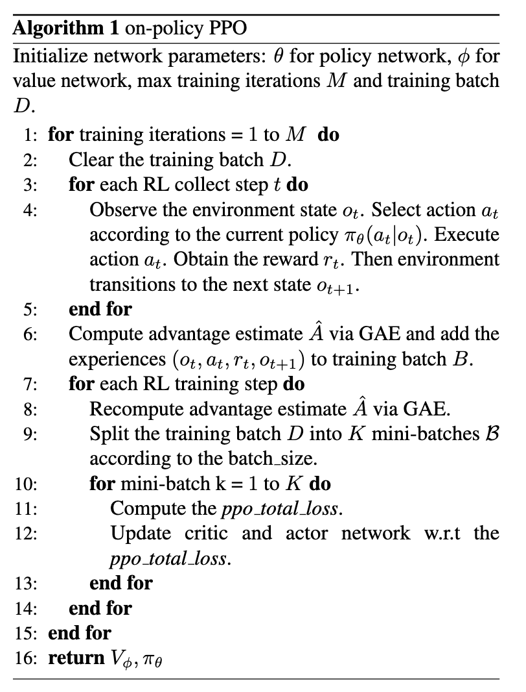
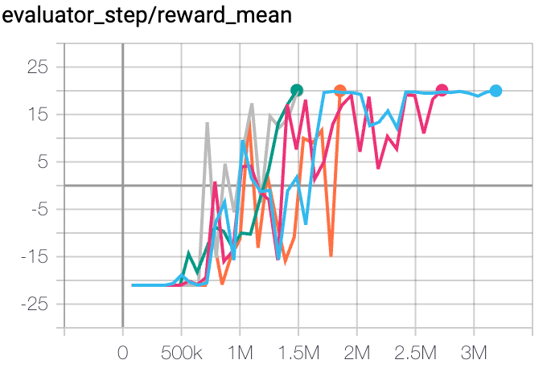
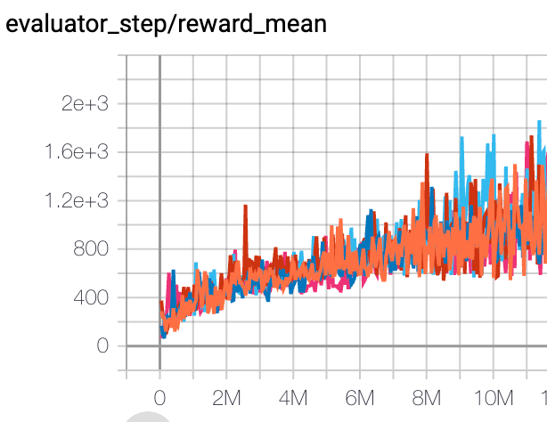
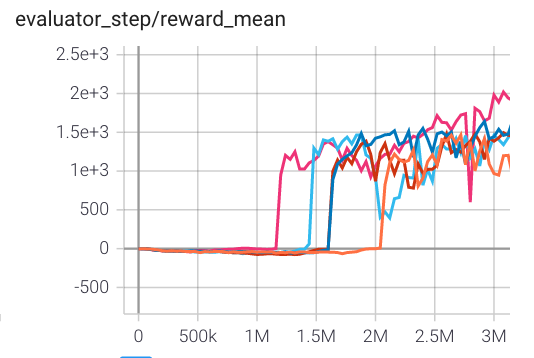
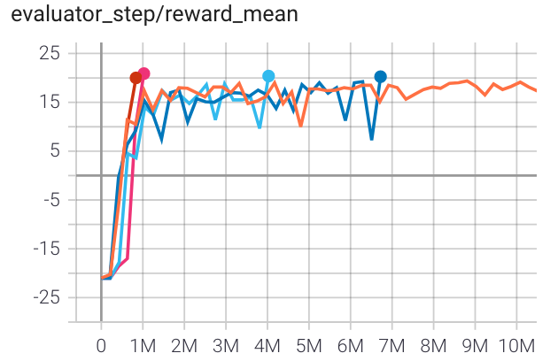
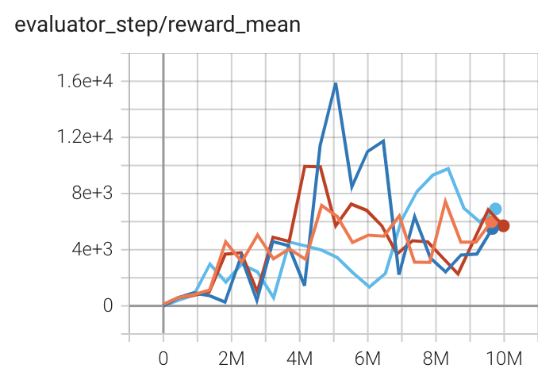
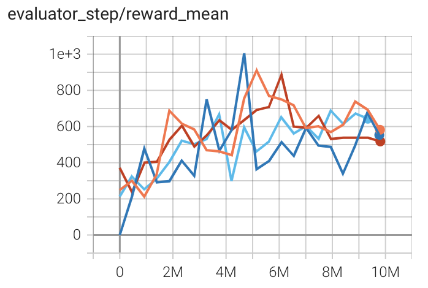
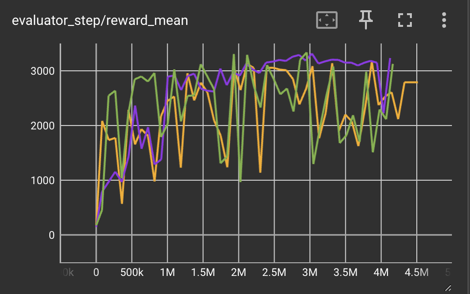
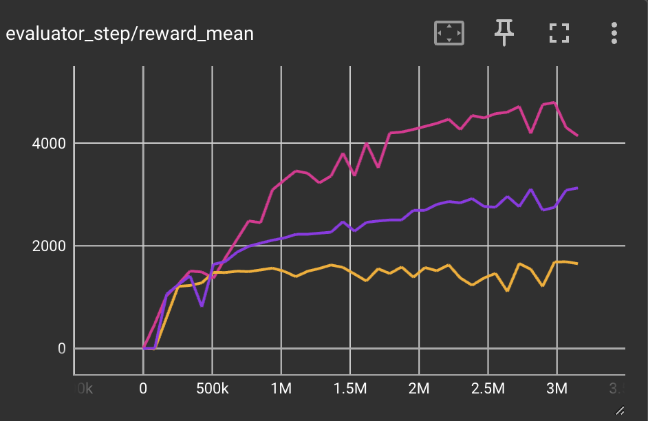

PPO¶
Overview¶
PPO (Proximal Policy Optimization) was proposed in Proximal Policy Optimization Algorithms. The key question to answer is that how can we utilize the existing data to take the most possible improvement step for the policy without accidentally leading to performance collapse. PPO follows the idea of TRPO (which restricts the step of policy update by explicit KL-divergence constraint), but doesn’t have a KL-divergence term in the objective, instead utilizing a specialized clipped objective to remove incentives for the new policy to get far from the old policy. PPO avoids the calculation of the Hessian matrix in TRPO, thus is simpler to implement and empirically performs at least as well as TRPO.
Quick Facts¶
PPO is a model-free and policy-gradient RL algorithm.
PPO supports both discrete and continuous action spaces.
PPO supports off-policy mode and on-policy mode.
PPO can be equipped with RNN.
PPO is a first-order gradient method that use a few tricks to keep new policies close to old.
Key Equations or Key Graphs¶
PPO use clipped probability ratios in the policy gradient to prevent the policy from too rapid changes, specifically the optimizing objective is:
where \(\frac{\pi_{\theta}(a \mid s)}{\pi_{\theta_{k}}(a \mid s)}\) is denoted as the probability ratio \(r_t(\theta)\), \(\theta\) are the policy parameters to be optimized at the current time, \(\theta_k\) are the parameters of the policy at iteration k and \(\gamma\) is a small hyperparameter control that controls the maximum update step size of the policy parameters.
According to this note, the PPO-Clip objective can be simplified to:
where,
Usually we don’t access to the true advantage value of the sampled state-action pair \((s,a)\), but luckily we can calculate a approximate value \(\hat{A}_t\). The idea behind this clipping objective is: for \((s,a)\), if \(\hat{A}_t < 0\), maximizing \(L^{C L I P}(\theta)\) means make \(\pi_{\theta}(a_{t} \mid s_{t})\) smaller, but no additional benefit to the objective function is gained by making \(\pi_{\theta}(a_{t} \mid s_{t})\) smaller than \((1-\epsilon)\pi_{\theta}(a_{t} \mid s_{t})\) . Analogously, if \(\hat{A}_t > 0\), maximizing \(L^{C L I P}(\theta)\) means make \(\pi_{\theta}(a_{t} \mid s_{t})\) larger, but no additional benefit is gained by making \(\pi_{\theta}(a_{t} \mid s_{t})\) larger than \((1+\epsilon)\pi_{\theta}(a_{t} \mid s_{t})\). Empirically, by optimizing this objective function, the update step of the policy network can be controlled within a reasonable range.
For the value function, in order to balance the bias and variance in value learning, PPO adopts the Generalized Advantage Estimator to compute the advantages, which is a exponentially-weighted sum of Bellman residual terms. that is analogous to TD(λ):
where V is an approximate value function, \(\delta_{t}=r_{t}+\gamma V\left(s_{t+1}\right)-V\left(s_{t}\right)\) is the Bellman residual terms, or called TD-error at timestep t.
The value target is calculated as: \(V_{t}^{target}=V_{t}+\hat{A}_{t}\), and the value loss is defined as a squared-error: \(\frac{1}{2}*\left(V_{\theta}\left(s_{t}\right)-V_{t}^{\mathrm{target}}\right)^{2}\), To ensure adequate exploration, PPO further enhances the objective by adding a policy entropy bonus.
The total PPO loss is a weighted sum of policy loss, value loss and policy entropy regularization term:
where c1 and c2 are coefficients that control the relative importance of different terms.
Note
The standard implementation of PPO contains the many additional optimizations which are not described in the paper. Further details can be found in IMPLEMENTATION MATTERS IN DEEP POLICY GRADIENTS: A CASE STUDY ON PPO AND TRPO.
Pseudo-code¶
{kind=link}
Note
This is the on-policy version of PPO. In DI-engine, we also have the off-policy version of PPO, which is almost the same as on-policy PPO except that we maintain a replay buffer that stored the recent experience, and the data used to calculate the PPO loss is sampled from the replay buffer not the recently collected batch, so off-policy PPO are able to reuse old data very efficiently, but potentially brittle and unstable.
Extensions¶
- PPO can be combined with:
Implementation¶
The default config is defined as follows:
The policy loss and value loss of PPO is implemented as follows:
def ppo_error(
data: namedtuple,
clip_ratio: float = 0.2,
use_value_clip: bool = True,
dual_clip: Optional[float] = None
) -> Tuple[namedtuple, namedtuple]:
assert dual_clip is None or dual_clip > 1.0, "dual_clip value must be greater than 1.0, but get value: {}".format(
dual_clip
)
logit_new, logit_old, action, value_new, value_old, adv, return_, weight = data
policy_data = ppo_policy_data(logit_new, logit_old, action, adv, weight)
policy_output, policy_info = ppo_policy_error(policy_data, clip_ratio, dual_clip)
value_data = ppo_value_data(value_new, value_old, return_, weight)
value_loss = ppo_value_error(value_data, clip_ratio, use_value_clip)
return ppo_loss(policy_output.policy_loss, value_loss, policy_output.entropy_loss), policy_info
The interface of ppo_policy_error and ppo_value_error is defined as follows:
Implementation Tricks¶
trick |
explanation |
|---|---|
Utilizing generalized advantage estimator to balance bias and variance in value learning.
|
|
the authors claim that when \(\hat{A}_t < 0\), a too large \(r_t(\theta)\) should also be clipped, which introduces dual clip:
\(\max \left(\min \left(r_{t}(\theta) \hat{A}_{t}, {clip}\left(r_{t}(\theta), 1-\epsilon, 1+\epsilon\right) \hat{A}_{t}\right), c \hat{A}_{t}\right)\)
|
|
In on-policy PPO, each time we collect a batch data, we will train many epochs to improve data efficiency.
And before the beginning of each training epoch, we recompute the advantage of historical transitions,
to keep the advantage is an approximate evaluation of current policy.
|
|
We standardize the targets of the value/advantage function using running estimates of the average
and standard deviation of the value/advantage targets. For more implementation details about
recompute advantage and normalization, users can refer to this discussion.
|
|
Value is clipped around the previous value estimates. We use the value clip_ratio same as that used to clip policy
probability ratios in the PPO policy loss function.
|
|
Using an orthogonal initialization scheme for the policy and value networks.
|
Benchmark¶
off-policy PPO Benchmark:
environment |
best mean reward |
evaluation results |
config link |
comparison |
|---|---|---|---|---|
Pong (PongNoFrameskip-v4) |
20 |
 | ||
Qbert (QbertNoFrameskip-v4) |
16400 |

|
||
SpaceInvaders (SpaceInvadersNoFrame skip-v4) |
1200 |
 | ||
Hopper (Hopper-v3) |
300 |

|
||
Walker2d (Walker2d-v3) |
500 |

|
||
Halfcheetah (Halfcheetah-v3) |
2000 |
 |
on-policy PPO Benchmark:
environment |
best mean reward |
evaluation results |
config link |
comparison |
|---|---|---|---|---|
Pong (PongNoFrameskip-v4) |
20 |
 | RLlib(20) |
|
Qbert (QbertNoFrameskip-v4) |
10000 |
 | RLlib(11085) |
|
SpaceInvaders (SpaceInvadersNoFrame skip-v4) |
800 |
 | RLlib(671) |
|
Hopper (Hopper-v3) |
3000 |
 | Tianshou(3127)
spinningup(2500) |
|
Walker2d (Walker2d-v3) |
3000 |

|
Tianshou(4895)
spinningup(2500) |
|
Halfcheetah (Halfcheetah-v3) |
3500 |
 |
spinningup(3000) |
References¶
John Schulman, Filip Wolski, Prafulla Dhariwal, Alec Radford, Oleg Klimov: “Proximal Policy Optimization Algorithms”, 2017; [http://arxiv.org/abs/1707.06347 arXiv:1707.06347].
Logan Engstrom, Andrew Ilyas, Shibani Santurkar, Dimitris Tsipras, Firdaus Janoos, Larry Rudolph, Aleksander Madry: “Implementation Matters in Deep Policy Gradients: A Case Study on PPO and TRPO”, 2020; [http://arxiv.org/abs/2005.12729 arXiv:2005.12729].
Andrychowicz M, Raichuk A, Stańczyk P, et al. What matters in on-policy reinforcement learning? a large-scale empirical study[J]. arXiv preprint arXiv:2006.05990, 2020.
Ye D, Liu Z, Sun M, et al. Mastering complex control in moba games with deep reinforcement learning[C]//Proceedings of the AAAI Conference on Artificial Intelligence. 2020, 34(04): 6672-6679.